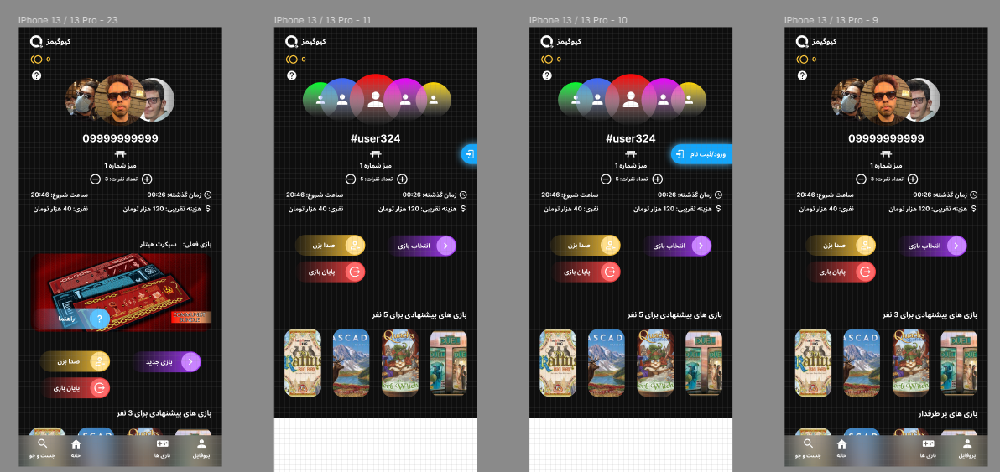

{% include base_path %}
---UPDATING---
At just 11 years old, I was already diving into various creative endeavors. I started my own blog, penned short horror stories, crafted my first hand-drawn and stop-motion animations, and even ventured into creating video small games. From a young age, I was driven by a desire to bring my ideas and creativity to life.
Over the years, my journey has been a thrilling one. I've ventured into making my own short film!, launched a podcast with my best friend, composed my own music, designed various websites, and even kicked off a YouTube channel. Yet, among all these creative pursuits, what I've found to be the most fulfilling is Software Development. I relish every aspect of it, from tackling challenging problems to witnessing my work benefit others.
I was filled with excitement and determination, so instead of taking a vacation during the 1399(2020) New Year holidays, I embarked on a self-study journey in Front-End development.
Projects
ILAB: Intelligent Research Lab Management and Student Supervision(Undergraduate Thesis Project)
We have worked for almost a year on this project and I was very pleased to see the results and also the reaction of our university’s faculty members to our project and how it solved their problems in managing their research labs.
Our project aims to help any university’s faculty to manage their research labs and supervise their students with ease. Providing beneficial solutions for professors and students needs and problems while working in a research lab.
Our project attributes AI and gamification elements to create a smart and engaging environment. We present a research paper bank with a collaborative tag management system as well as a smart algorithm for mining meaningful tags from papers.
We have tested this project with two labs in our university and got very positive results and feedbacks. Also we got dozens of labs in our university in a wait list to grant access to Ilab ASAP.
QToppia: virtual world into everyday objects
Back-End
- NodeJs
- ExpressJs
- Mongoose/MongoDB
- JOI
- winston
- NGINX
Front-End
- ReactJs
- Redux/Redux Toolkit
- Axios
- SCSS
UI/UX/Product
- Figma
- Adobe Illustrator
- Adobe Photoshop
This is my passion project, a labor of love that I've dedicated countless hours to. It encompasses around 10,000 lines of code, and I've invested my free time in it, day and night, even when returning home exhausted from work or university classes. The name QToppia comes from the combination of Utopia and QR codes!
I've handled every aspect of this project myself, from designing the products and application pages in Figma to translating those designs into code, and finally deploying it on an Ubuntu server.
Throughout this journey, I have learned a lot of valuable knowledge whether it was a business matter or technical subject.
 This is the "QMug"! This unique mug is equipped with a QR code, enabling users to effortlessly track their habits, access a daily to-do list, and monitor their water intake. By cleverly using drink counts as indicators for specific habits, each sip becomes a step toward achieving personal goals. Also, it leverages Chat GPT features to provide a much smarter environment for the users.
This is the "QMug"! This unique mug is equipped with a QR code, enabling users to effortlessly track their habits, access a daily to-do list, and monitor their water intake. By cleverly using drink counts as indicators for specific habits, each sip becomes a step toward achieving personal goals. Also, it leverages Chat GPT features to provide a much smarter environment for the users.
QGames
A passion project inspired by QToppia, designed to enhance the board game cafe experience. This app provides personalized game recommendations based on users’ past games and preferences, allowing them to track their progress and achievements for a richer gaming journey. Additionally, it introduces gamification with QPoints, rewarding engagement with discounts on future purchases, enhancing each visit. With our app, board game cafes can create memorable experiences, build customer loyalty, and elevate their business to new heights.
